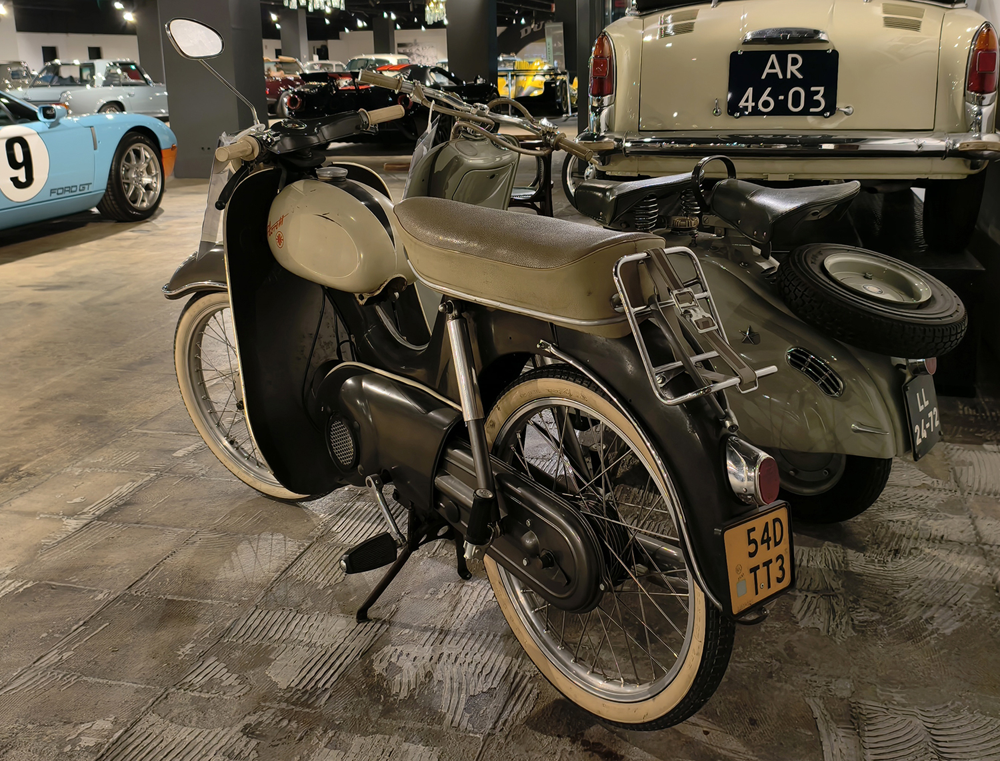
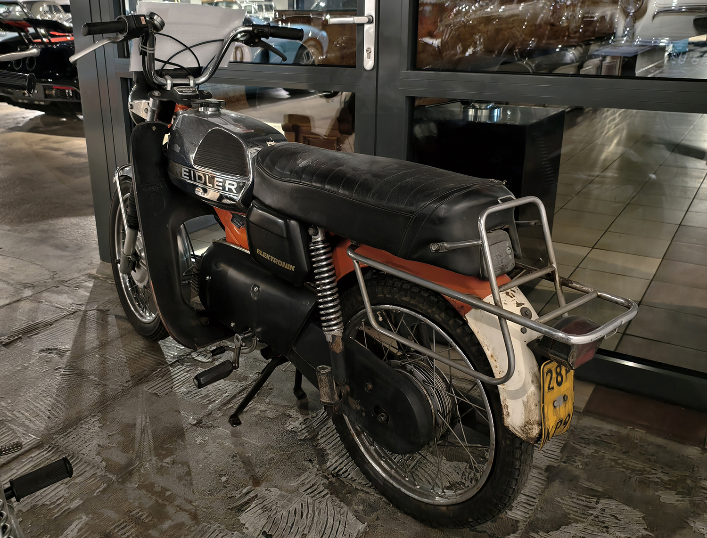
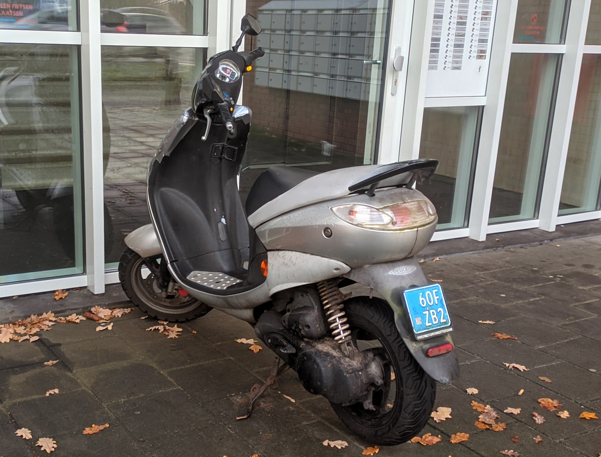
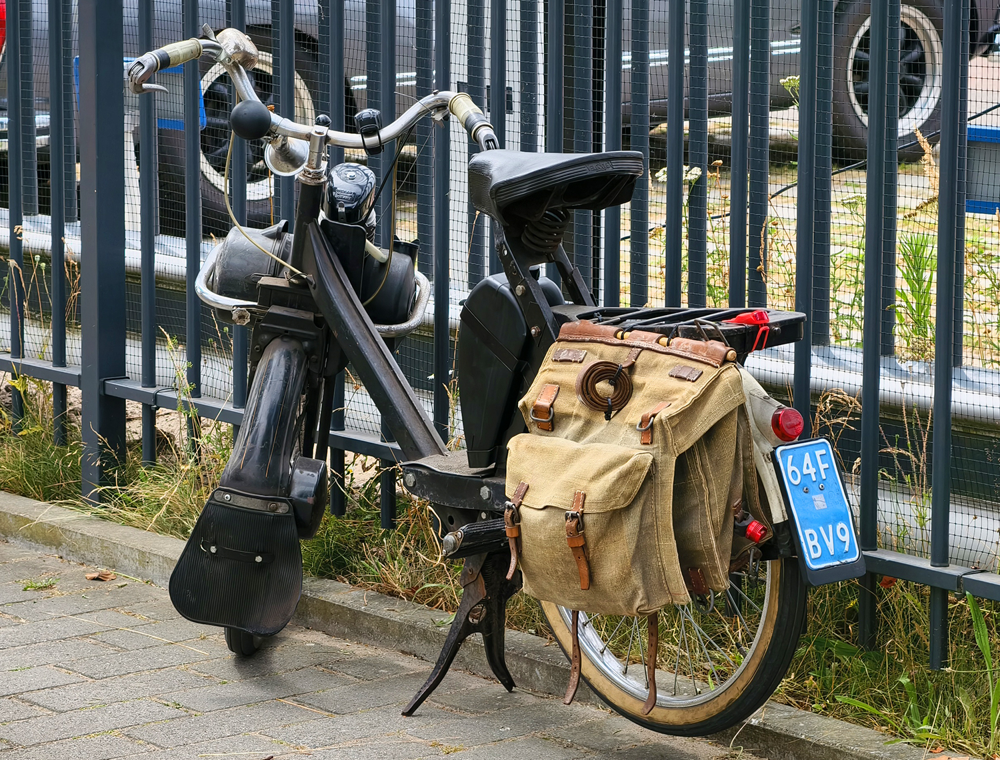
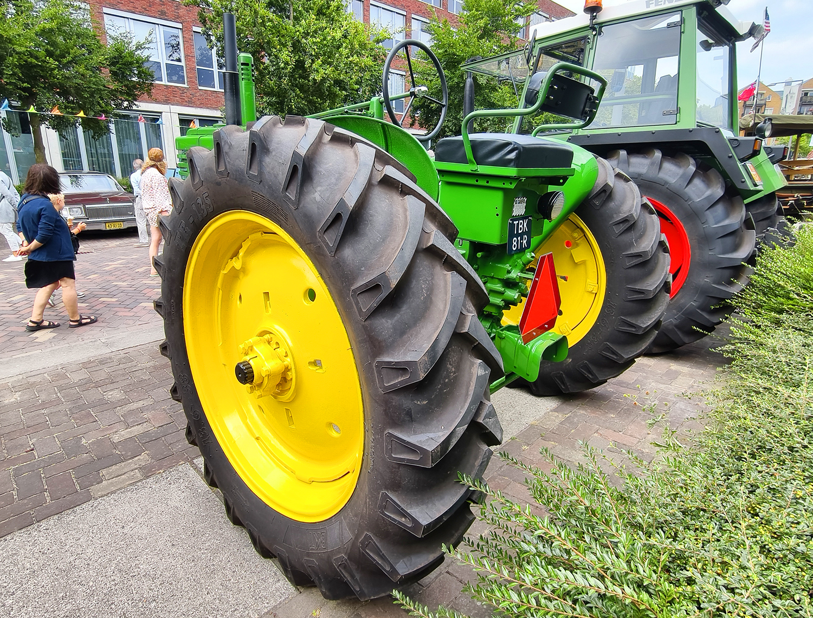
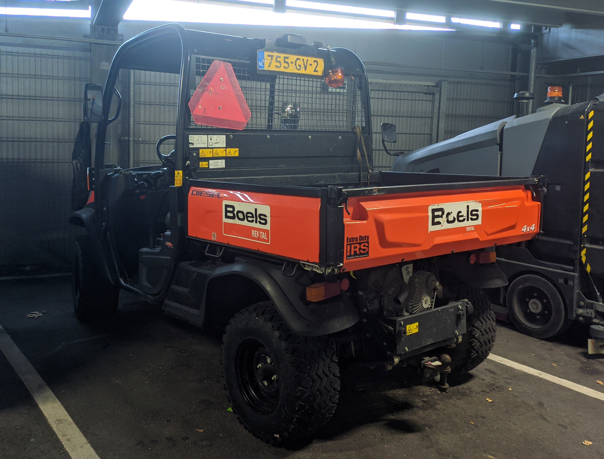
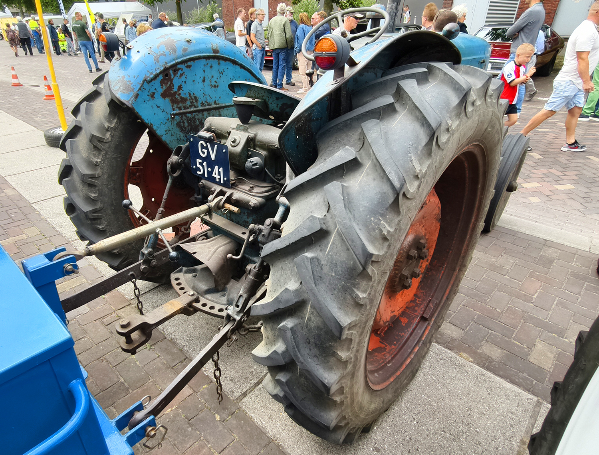

License Plates of The Netherlands (NL)
Photographed in The Netherlands


Sidecode 7. Moped Series. F or D = Scooters and Mopeds. Yellow plate = Max speed 45km/h.


Sidecode 7. Moped Series. F or D = Scooters and Mopeds. Yellow plate = Max speed 45km/h.


Sidecode 7. Moped Series. F or D = Scooters and Mopeds. Blue plate = Max speed 25km/h.


Sidecode 7. Moped Series. F or D = Scooters and Mopeds. Blue plate = Max speed 25km/h.


Sidecode 12. Agricultural Vehicle Series. T = Agricultural Vehicle.


Sidecode 12. Agricultural Vehicle Series. T = Agricultural Vehicle. Smaller size plate.


Sidecode 11. Agricultural Vehicle Series. T = Agricultural Vehicle. Smaller size plate.


Sidecode 11. Agricultural Vehicle Series. T = Agricultural Vehicle. White on dark blue = Oldtimers (Cars over 40 years old).


Sidecode 14. Agricultural Vehicle Series. GV = Grensverkeer (Border traffic), for agricultural vehicles that are not required to have a registration number in the Netherlands, but sometimes participate in traffic abroad where they do.


Sidecode 1. Agricultural Vehicle Series. White on dark blue = Oldtimers (Cars over 40 years old). GV = Grensverkeer (Border traffic), for agricultural vehicles that are not required to have a registration number in the Netherlands, but sometimes participate in traffic abroad where they do.